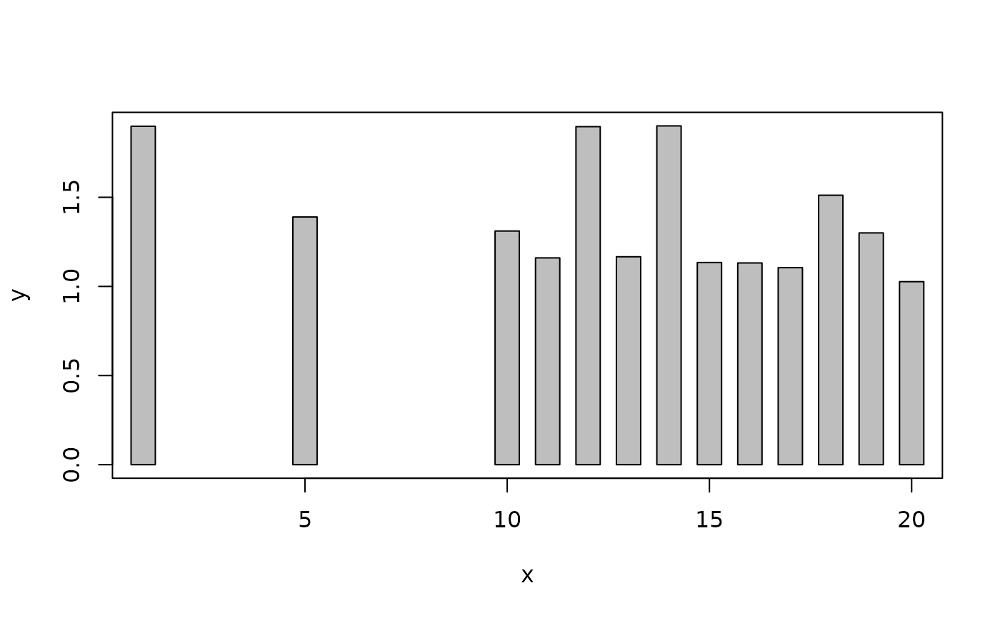
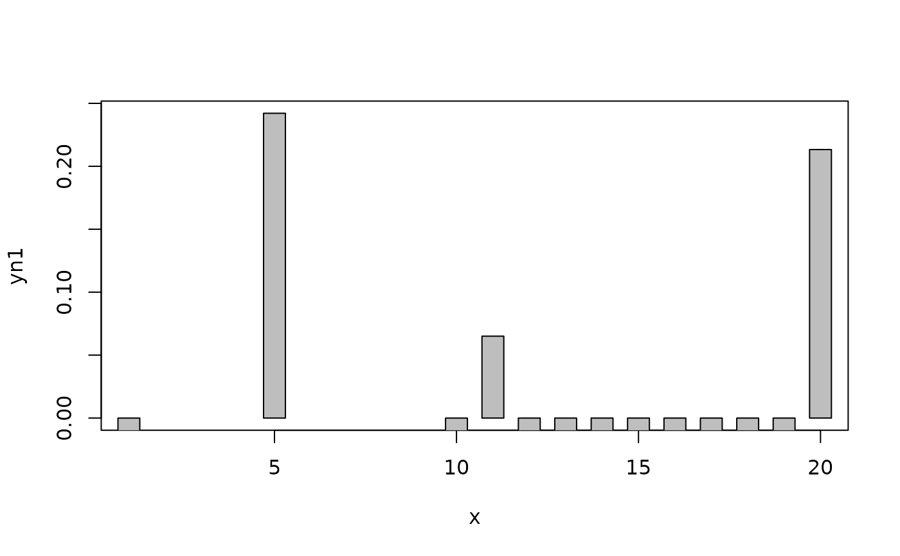
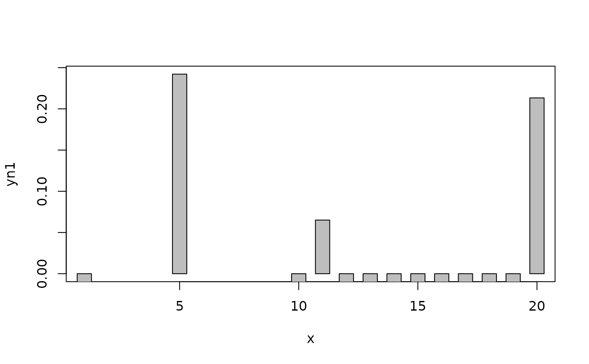
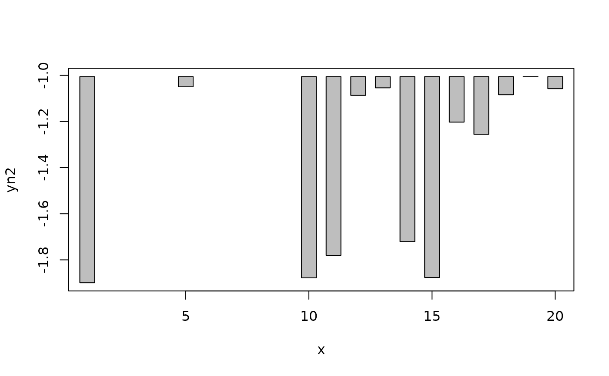
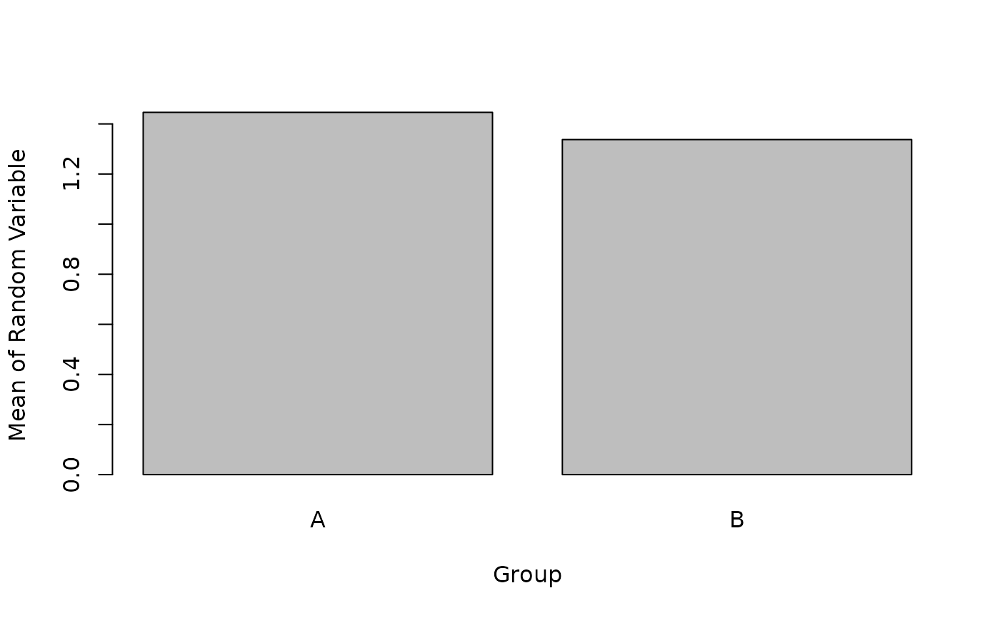
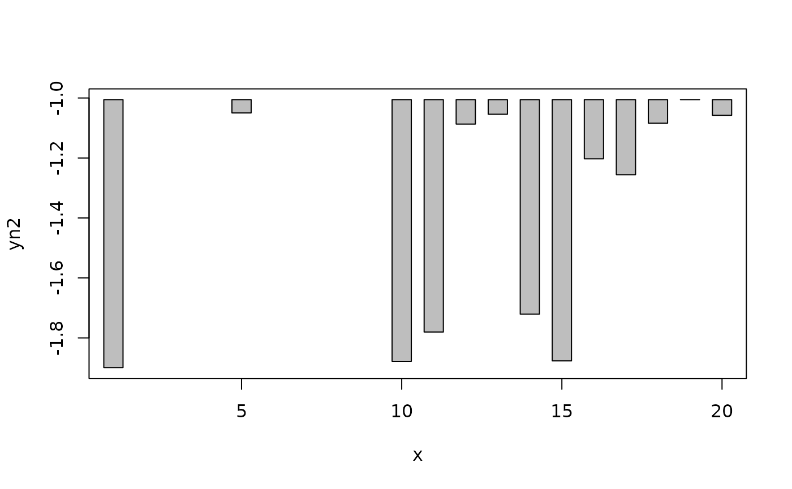
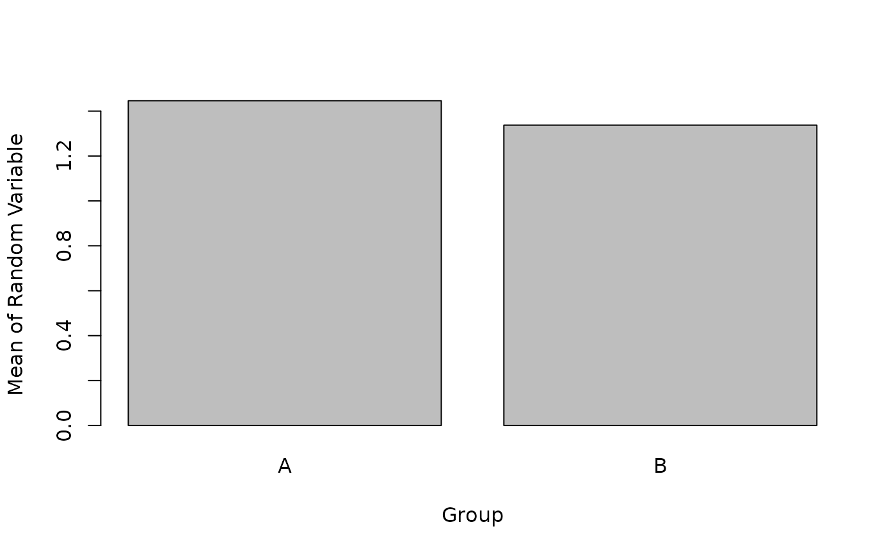

Scatterplot with histogram-like bars.
plotH.RdScatterplot with histogram-like bars; a modification of plot(...,type="h").
Usage
plotH(x,...)
# S3 method for formula
plotH(x,data=NULL,xlab=names(mf)[2],ylab=names(mf)[1],...)
# S3 method for default
plotH(x,y,xlab=paste(deparse(substitute(x))),
ylab=paste(deparse(substitute(y))),width=0.6,ylim=NULL,col="gray",...)Arguments
- x
Vector of x-coordinates or a formula of the form y~x (see below for y).
- y
Vector of y-coordinates.
- xlab
A string for labeling the x-axis.
- ylab
A string for labeling the y-axis.
- data
The data frame from which the formula should be evaluated.
- width
A numeric that indicates the width of the bars.
- ylim
A vector of length two that indicates the limits over which to plot the y-axis. See details.
- col
A string that indicates the fill color for the bars.
- ...
Additional arguments sent to the plot or barplot functions.
Details
plotH is meant to be a modification of the type="h" version of plot such that the "bars" appears as actual rectangles rather than vertical lines. It defaults so that the lower bound of the y-axis is 0; change to ylim=NULL to over-ride this default (and return to the default used in plot.
A pass-through to barplot is used if the x (or "RHS") variable is categorical.
Examples
d<-data.frame(x=c(1,5,10:20),y=runif(13)+1,
yn1=runif(13)-0.5,yn2=runif(13)-2,
g=factor(sample(c("A","B","C"),13,replace=TRUE)))
# new plotH function with formula notation
plotH(y~x,data=d)

# old plot() function with formula notation -- for comparison's purpose
plot(y~x,data=d,type="h")
# new function over-riding default ylim, increasing bar width,
# and changing bar color
plotH(y~x,data=d,ylim=range(d$y),width=0.9,col="red")
 # handling some negative values
plotH(yn1~x,data=d) # not so good, because of default ylim
# handling some negative values
plotH(yn1~x,data=d) # not so good, because of default ylim
 plotH(yn1~x,data=d,ylim=c(0,max(d$yn1))) # old look

# handling all negative values
plotH(yn2~x,data=d)
plotH(yn1~x,data=d,ylim=c(0,max(d$yn1))) # old look

# handling all negative values
plotH(yn2~x,data=d)
 plotH(yn2~x,data=d,ylim=range(d$yn2)) # old look

# example of pass-through to barplot
smry<-by(d$y,d$g,mean)
plotH(levels(d$g),smry,ylab="Mean of Random Variable",xlab="Group")

# example of non-formula usage
x1 <- d$x
y1 <- d$y
plotH(x1,y1,col="blue")
plotH(yn2~x,data=d,ylim=range(d$yn2)) # old look

# example of pass-through to barplot
smry<-by(d$y,d$g,mean)
plotH(levels(d$g),smry,ylab="Mean of Random Variable",xlab="Group")

# example of non-formula usage
x1 <- d$x
y1 <- d$y
plotH(x1,y1,col="blue")